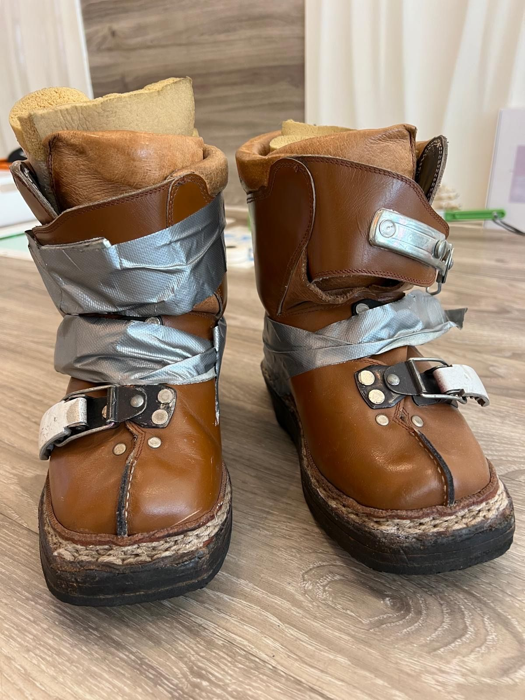

Skiën met achondroplasie
Wat is achondroplasie? Achondroplasie is een groeistoornis en de meest voorkomende oorzaak van dwerggroei. Het woord achondroplasie betekent letterlijk een "stoornis van aanleg van het kraakbeen" Achondroplasie is een zeldzame…
Reacties uitgeschakeld voor Skiën met achondroplasie